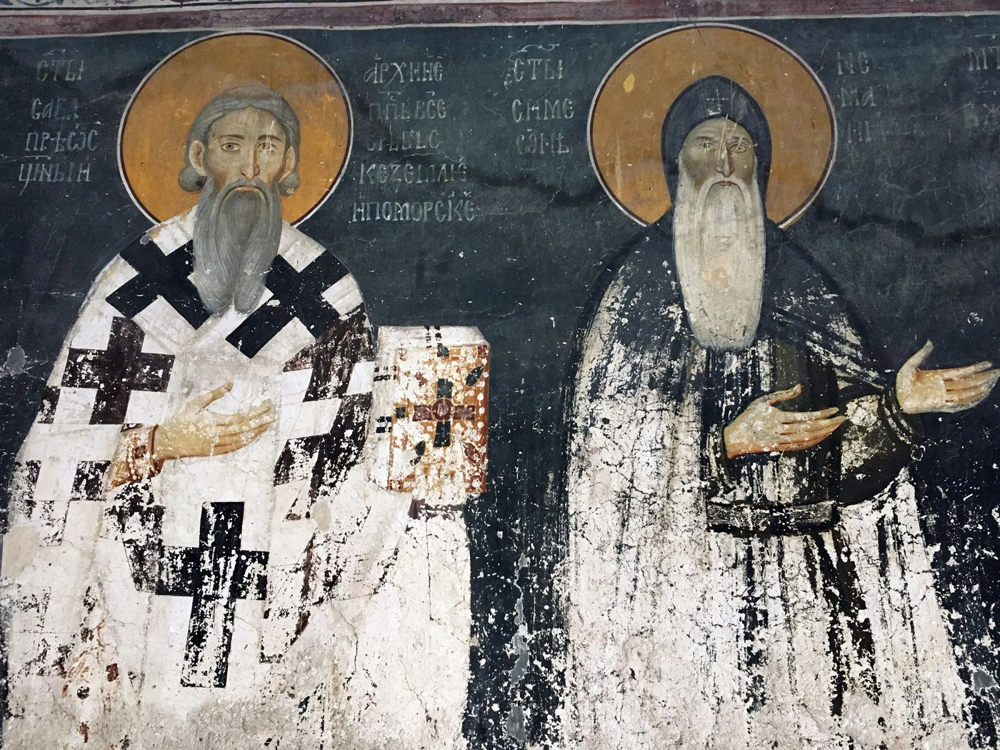

La Serbia medievale: Nemanja, ortodossia e dissenso
La Serbia medievale non fu un semplice sfondo della storia bogomila. Nella seconda metà del XII secolo il gran župan Stefan Nemanja consolidò il proprio potere e promosse un ordine politico legato all’ortodossia. Le fonti serbe raccontano che, durante il suo governo, persone definite eretiche furono condannate e perseguitate. La loro identificazione con i Bogomili è plausibile e diffusa nella storiografia, ma i testi non offrono una descrizione dottrinale abbastanza precisa da chiudere ogni dubbio.
Questo contributo affronta l’episodio come una questione di storia religiosa e politica. Non presuppone una continuità fra dissenso medievale e identità serba moderna; esamina invece come si definissero, nella società medievale, l’ortodossia, l’autorità del sovrano e i limiti della divergenza religiosa.

La fonte principale: una vita dinastica e religiosa
Il racconto più noto della repressione compare nella Vita di Simeone scritta da Stefan Prvovenčani, figlio di Nemanja, nei primi decenni del XIII secolo. Il testo ricorda che Nemanja convocò un’assemblea contro un’eresia, condannò i suoi sostenitori e ordinò la distruzione dei loro libri; presenta inoltre il sovrano come difensore della fede. Non è una cronaca amministrativa o il verbale di un processo. È un testo dinastico e agiografico, composto per trasmettere una memoria esemplare del fondatore della dinastia dei Nemanjić.
Questo genere non rende la testimonianza inutile. Ci obbliga, però, a domandarci quale immagine del sovrano l’autore volesse costruire, quali dettagli selezionasse e quali restassero fuori dal racconto. La fonte dice molto sul modo in cui la corte e la Chiesa serba volevano ricordare Nemanja; dice meno sulle convinzioni precise degli accusati e sulle loro motivazioni.
Gli studiosi hanno spesso identificato gli eretici con i Bogomili, considerando la diffusione del dualismo nei Balcani e i paralleli con le polemiche bulgare e bizantine. John V. A. Fine e Andrew P. Roach discutono il problema nel quadro più ampio della storia religiosa balcanica. La cautela è necessaria perché il testo di Stefan non nomina esplicitamente una comunità bogomila né ne espone la dottrina in modo sistematico. È quindi più corretto scrivere “gruppo considerato eretico, spesso identificato con i Bogomili” che presentare l’identificazione come certa.
Nemanja e la costruzione dell’ordine politico
Nemanja governò in un periodo in cui i poteri balcanici negoziavano continuamente la propria posizione fra Bisanzio, il papato, l’Ungheria e le forze locali. La formazione di un’autorità politica più stabile procedeva insieme alla definizione di legami dinastici, monastici ed ecclesiastici. La religione non era un ambito separato dalla politica: legittimava il potere, dava forma alla comunità e collegava il sovrano a un ordine cristiano più ampio.
Nemanja e i suoi figli ebbero un ruolo centrale nel patronato monastico e nella memoria religiosa della dinastia. Dopo aver rinunciato al potere, Nemanja prese il nome monastico di Simeone; i testi composti dai figli Sava e Stefan ne trasformarono la vita in un modello di sovrano cristiano e di fondatore. In questo quadro, la difesa dell’ortodossia non è un episodio isolato: contribuisce all’immagine del sovrano ideale, al pari della fondazione di monasteri e della cura della discendenza.
La condanna dell’eresia va letta quindi su più piani. Fu un atto religioso contro ciò che le autorità ritenevano deviante; fu anche un modo di riaffermare la capacità del sovrano di convocare, giudicare e proteggere l’ordine cristiano. Questo non significa ridurre la fede a una copertura del potere. Significa riconoscere che nel Medioevo convinzioni religiose, istituzioni e governo si sostenevano e si influenzavano reciprocamente.
La politica religiosa di Sava: disciplina e persuasione
La storia non si ferma alla repressione attribuita a Nemanja. Nel 1219, sotto il figlio Sava, la Chiesa serba ottenne lo status di arcivescovado autocefalo, cioè una propria organizzazione ecclesiastica non subordinata alla nomina ordinaria da parte di un’altra sede. La data e le circostanze sono ricostruite attraverso fonti ecclesiastiche e successive narrazioni; l’evento segnò comunque un passaggio importante nella storia istituzionale serba.
Andrew P. Roach, studiando la predicazione e le strategie di Sava nei Balcani del XIII secolo, mette in evidenza che l’azione contro l’eresia non si esauriva nell’uso della coercizione. Le fonti mostrano anche un interesse nel persuadere gli eretici a rientrare nella Chiesa ortodossa e nel rendere più efficace l’insegnamento religioso. Roach descrive questo contesto come una competizione per le appartenenze religiose: una formula moderna che non va presa come se medievali e contemporanei avessero lo stesso concetto di scelta, ma che aiuta a vedere la pluralità delle strategie.
Questo confronto non deve trasformare Nemanja in un simbolo di tolleranza, né Sava in un fautore della libertà religiosa moderna. Permette invece di distinguere momenti e strumenti: la condanna pubblica, la disciplina ecclesiastica, la predicazione e il tentativo di ricondurre i dissidenti all’ortodossia. La storia delle istituzioni religiose è più articolata di una contrapposizione semplice fra persecuzione e libertà.
Autocefalia e libertà di coscienza: concetti diversi
L’autocefalia ecclesiastica è una forma di autonomia istituzionale della Chiesa. Non equivale alla libertà religiosa individuale, né alla separazione fra Chiesa e Stato. Nel caso serbo, l’autonomia dell’arcivescovado contribuì a rafforzare l’organizzazione religiosa del regno e la sua capacità di formare il clero. È un passaggio importante per la storia serba, ma non dimostra che le persone al di fuori dell’ortodossia fossero libere di organizzarsi o praticare la propria fede.
La distinzione è centrale per questo progetto. Un popolo o un’istituzione possono cercare autonomia da un’autorità esterna e, nello stesso tempo, imporre unità religiosa o politica all’interno. Nel Medioevo queste pratiche erano legate a concezioni di comunità e di potere differenti da quelle dei moderni diritti individuali. Il nostro compito è comprendere quel contesto senza giudicarlo con categorie confuse e senza rinunciare a porre domande morali al passato.
Che cosa sappiamo e che cosa resta da verificare
- È attestato: la Vita di Simeone attribuisce a Nemanja una campagna contro un’eresia e ricorda misure punitive e la distruzione di libri.
- È un’identificazione storiografica: molti studiosi associano gli accusati ai Bogomili, ma il racconto serbo non espone la dottrina del gruppo in modo sufficiente a eliminare ogni incertezza.
- È un dato di contesto: la corte dei Nemanjić collegò potere dinastico, patronato monastico e promozione dell’ortodossia.
- È un’interpretazione contemporanea: leggere questo episodio attraverso la domanda della libertà di coscienza può essere fecondo, ma non significa che i protagonisti medievali formulassero i diritti moderni.
Una domanda per la storia balcanica
La vicenda serba rende impossibile una rappresentazione idealizzata della resistenza religiosa: il potere politico che consolidava la propria autonomia poteva anche reprimere il dissenso spirituale. Questa contraddizione non è un difetto da nascondere, ma un dato storico da comprendere. Ci ricorda che l’indipendenza di uno Stato e la libertà di coscienza dei suoi abitanti sono questioni collegate, ma non identiche.
È in questo senso che il caso medievale entra nel percorso del sito. Non cerchiamo un’origine bogomila della Serbia moderna. Mettiamo in dialogo storie differenti attraverso una domanda: come può una comunità difendere la propria dignità e, nello stesso tempo, riconoscere la coscienza di chi non condivide l’ortodossia dominante?
Fonti e bibliografia
- Stefan Prvovenčani, Žitije svetog Simeona [Vita di san Simeone], in Sabrani spisi, a cura di Ljiljana Juhas-Georgievska (Belgrado: Prosveta; Srpska književna zadruga, 1988), pp. 9–50. Testo digitale in serbo. Fonte agiografica e dinastica.
- John V. A. Fine Jr., The Late Medieval Balkans: A Critical Survey from the Late Twelfth Century to the Ottoman Conquest (Ann Arbor: University of Michigan Press, 1994), in particolare la discussione sulla storia politica serba del XII secolo e sulle fonti relative agli eretici.
- Andrew P. Roach, “The Competition for Souls: Heresy, Orthodoxy and Consumer Choice in Religion in the Thirteenth-Century Balkans,” Glasnik 50, no. 1 (2006), 141–159. Repository dell’Università di Glasgow.
- Andrew P. Roach, “Changes in Identity and Ideology in the Byzantine World in the Second Half of the Twelfth Century: The Case of Serbia,” in Changes in the Byzantine World in the Twelfth and Thirteenth Centuries. Oxford Academic.
Questo contributo separa la testimonianza medievale, la ricostruzione degli studiosi e la riflessione filosofica odierna. L’identificazione degli accusati con i Bogomili rimane formulata come ipotesi storiografica, non come certezza documentaria.